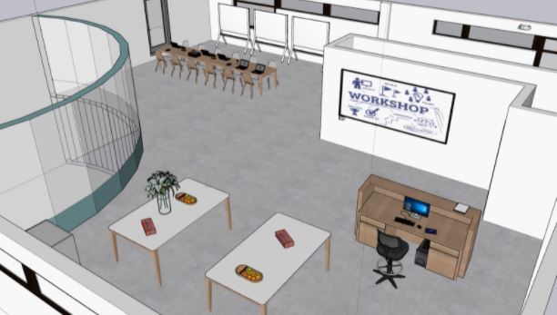
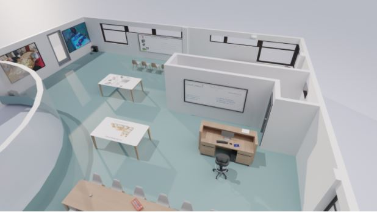

PS1 - Project Shared Spaces
For the subject of PS1, we learned to explore User Experience past the single-user interface design.
We gained knowledge on where people and technology intersect in public, as well as private spaces. The end goal was to design for an intercative space based on that knowledge.
Our client was Ipse de Bruggen, for which we created the "Adapting Room" which their employees could use.
At the end of the project, we achieved the goal of expanding our research skills and knowledge as an outcome, which will surely help us in future
situations.
 